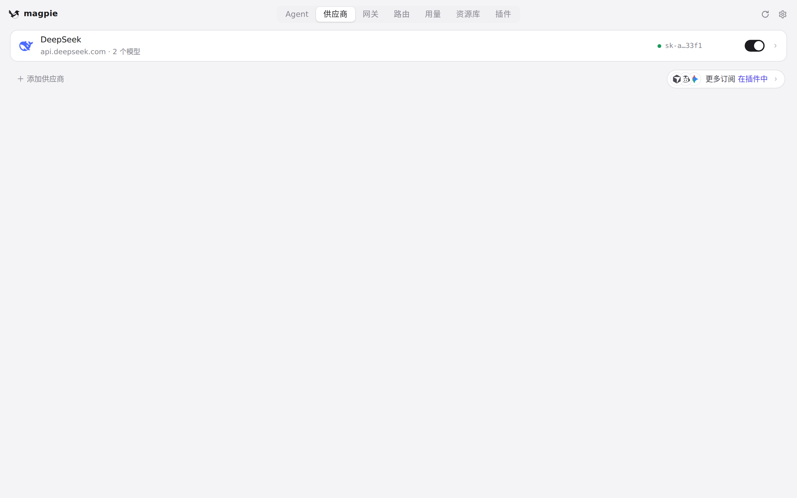
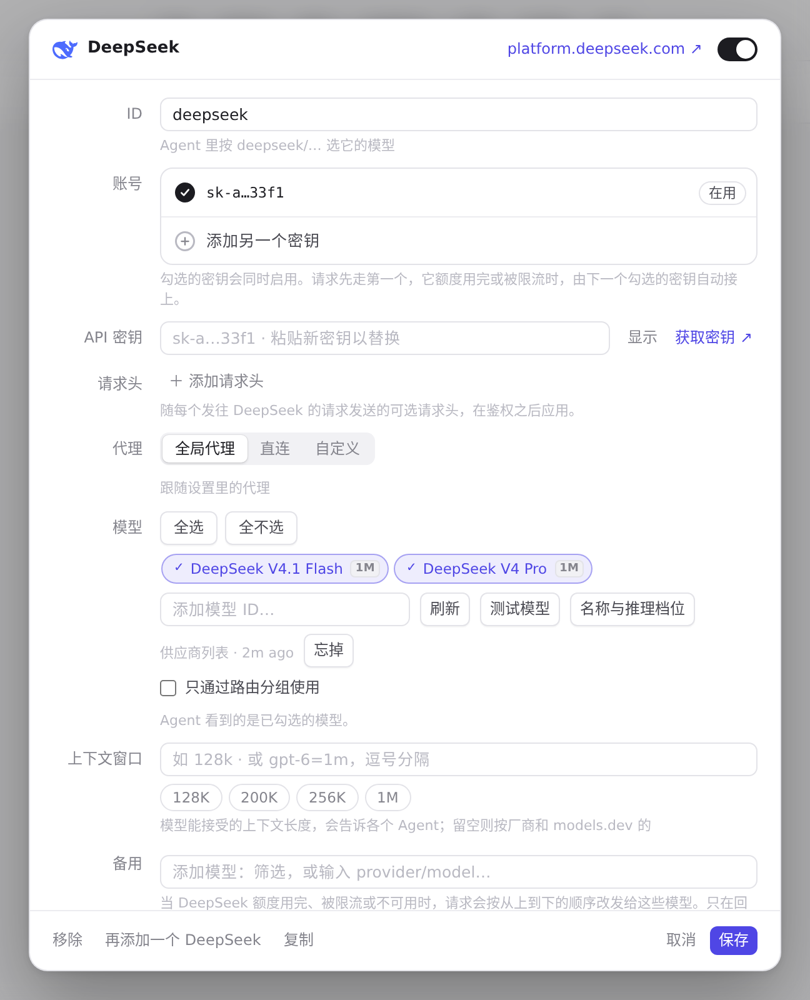
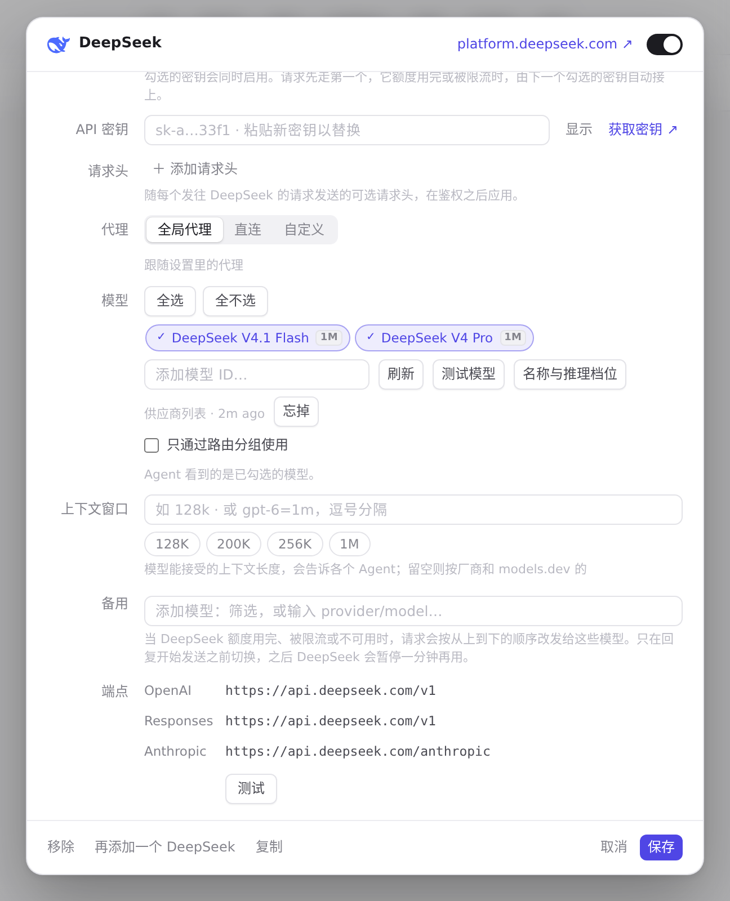

#365 界面预览
commit 9ee2cd8 · 回到 PR · 供应商编辑器里，自定义供应商在「代理」下面多了一行「联网搜索」：勾选框「自己能联网搜索」加一段说明；打开编辑器时按已保存的值勾上，保存时把 searches 一并提交，复制供应商时也会带上。三种新文案补了中文。
红线是鼠标走过的轨迹，红色圆环是一次点击；底部文字是这一步在做什么。空格暂停，← → 逐段查看。

供应商编辑器：新开关该出现的位置 · 供应商页的列表

供应商编辑器：新开关该出现的位置 · 打开后的供应商编辑器

供应商编辑器：新开关该出现的位置 · 编辑器往下滚一屏
 供应商编辑器：新开关该出现的位置 · 滚到「代理」一行附近：自定义供应商的「联网搜索」一行就在它下面
供应商编辑器：新开关该出现的位置 · 滚到「代理」一行附近：自定义供应商的「联网搜索」一行就在它下面